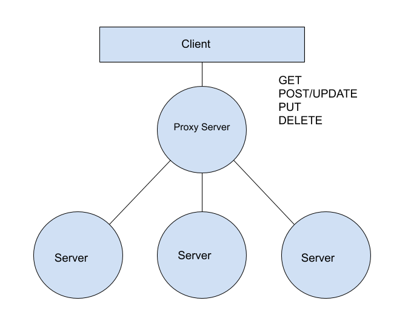
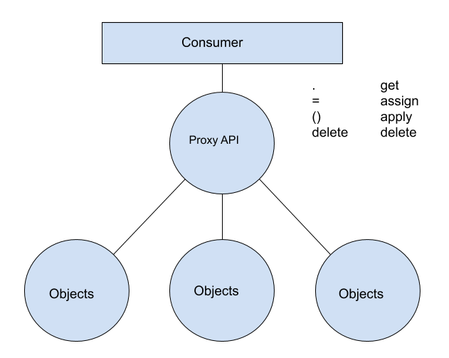

Modern Javascript on the Browser
Why are we here?
- Understand Modern Javascript
- Understanding the challenges to serve Modern Javascript
- How to serve it across all browsers
What will we do here?
Part 1
-
ES6 and above - ES6, ES7, ES8, ES9, ES10 and ES11
Skim through basic features. Will talk more on the interesting ones not used by us till now Will also look at some interesting parts of ES12 proposed spec (by tc39).
Part 2
- Modularising your JS
- Application Bundling and serving
Lets begin PART 1!
Overview
Variables and Scopes
ES 5
var PI = 3.142;
PI = 5; // allowed
ES 6
const PI = 3.142;
PI = 5; // Error - cannot redeclare a const
ES 5
console.log(x);// undefined
var x = 5;
console.log(x);// 5
ES 6
console.log(x);// error - x is not defined
let x = 5;
console.log(x);
Scope of let
var has a function scope
function test() {
// i is declared as var
for (var i = 0; i < 10; i++) {
...
}
console.log(i);// 10
}
test();
function test() {
// i is declared as let
for (let i = 0; i < 10; i++) {
...
}
console.log(i);// error - i is not defined
}
test();
Block scope
Blocks
function test() {
let x = 10;
{
// this is a block
// can do some operation without polluting parent scope
let x = 20;
console.log(x);// 20
}
console.log(x);// 10
}
test();
Works with functions also
Blocked Scoped Functions
function test() {
function foo () { return 1; }
console.log(foo()); // 1
{
function foo () { return 2; }
console.log(foo()); // 2
}
console.log(foo()); // 1
}
test();
Arrow Functions
ES 5
var func = function (a) {return a+1;};
console.log(func(1));// 2
ES 6
const func = a => a+1;
console.log(func(1));// 2
Anatomy of the Arrow function
let variable = (a, b, c) => {return a + b + c;};
// if we are just returning a value, we can avoid brackets and return keyword
let variable = (a, b, c) => a + b + c;
// for single arguement, we can avoid paranthesis as well
let variable = a => a + 1;
Scopes in Arrow Functions
In ES5, we would do this to maintain proper context in callbacks
function dummy(numbers) {
var instance = this;// to use current context inside callbacks
this.nums = numbers;
this.fives = [];
this.nums.forEach(function (v) {
if (v % 5 === 0) {
// if this was used, it will take the current
// function context instead of dummy's
instance.fives.push(v);
}
});
}
var x = new dummy([1,2,3,4,5,6,7,8,9,10]);
console.log(x.fives);// [5, 10]
Arrow functions are executed in the declaration context rather than the calling context
function dummy(numbers) {
// No need of instance
this.nums = numbers;
this.fives = [];
this.nums.forEach(v => {
if (v % 5 === 0) {
// this refers to dummy's instance
this.fives.push(v);
}
});
}
var x = new dummy([1,2,3,4,5,6,7,8,9,10]);
console.log(x.fives);// [5, 10]
Default Parameters
Function params can have default values
function increment(base, by = 1) {// default values to params
return base + by;
}
console.log(increment(2, 4));// 6
console.log(increment(2));// 3
Spread Operator
const str = "abcde";
const chars = [...str];// ['a','b','c','d','e']
is very usefull for appending or prepending an array or concatinating 2 arrays
const arr1 = [1,2,3,4]; const arr2 = [0, ...arr1];const arr1 = [1,2,3,4]; const arr2 = [...arr1, 5];const arr1 = [1,2,3,4]; const arr2 = [5,6,7,8]; const arr3 = [...arr1, ...arr2];
A positive outcome of using the spread operator is that it helps make your code have immutable variables.
Rest parameter
add x and y and multiply by number of arguements other than x and y
ES5
function func (x, y) {
var a = Array.prototype.slice.call(arguments, 2);
return (x + y) * a.length;
}
console.log(func(1, 2, "hello", true, 7));// 9
ES6
// "..." if used to collect elements is called a rest
function func (x, y, ...a) {
return (x + y) * a.length;
}
console.log(func(1, 2, "hello", true, 7));// 9
Destructuring Assignments
const [a, b] = [1,2];
console.log(a, b); // 1, 2
const {x, y} = {x: 1, y: 2};
console.log(x, y); // 1, 2
Strings and Literals
Template Literals
const data = "test";
console.log(`we are logging via a variable : ${data}`);
// we are logging via a variable : test
let binaryNumber = 0b111110111;
let octal = 0o767;
console.log(binaryNumber);// 503
console.log(octal);// 503
console.log("𠮷".length === 2);// true
console.log("𠮷".match(/./u)[0].length === 2);// true
Enhanced Object Properties
function getPerson(n, s, a) {
const name = n;
const surname = s;
const age = a;
// no need to write key name if key name and variable name is the same
return {
name,
surname,
age, // trailing commas are allowed now!
};
}
const p = getPerson("Jonas", "Kahnwald", NaN);
console.log(p.name);// Jonas
var obj = {
foo: "bar"
};
obj[ "baz" + fn() ] = 42;
const obj = {
foo: "bar",
["baz" + fn()]: 42,
};
const obj = {
foo() {
// need not write foo: function () {}
}
};
Classes and OOP
var MyClass = function () {
//constructor
};
Shape.prototype.publicMethod = function () {};
var ob = new MyClass();
ob.publicMethod();
function MyClass() {
_constructor() {}
this.publicMethod = function () {};
_constructor();
}
var ob = new MyClass();
ob.publicMethod();
class MyClass {
constructor () {
}
publicMethod () {
}
}
const ob = new MyClass();
ob.publicMethod();
class MyClass {
#X = 0; // private variables
constructor () {
}
publicMethod () {
this.#privateMethod();
}
#privateMethod () {}
}
const ob = new MyClass();
ob.publicMethod();
class MobileOverlayConfig extends OverlayConfig {
constructor() {
super();
}
// custom functions here
}
class MyClass {
...
static getNewObj() {
return new MyClass();
}
}
class MyClass {
constructor() {this._a = 0;}
set a(aValue) {this._a = aValue * 2;}
get a() {return this._a % 100;}
}
const ob = new MyClass();
ob.a = 5;
console.log(ob.a);// 10
ob.a = 50;
console.log(ob.a);// 0
Symbols
const k = Symbol();
const m = Symbol("named");
const n = Symbol("named");
console.log(m == n, m === n); // false, false
const RED_COLOR = Symbol('red');
const BLUE_COLOR = Symbol('blue');
...
// for internal logic, we can pass around the symbol like an enum
function getColorCode(color) {
switch(color) {
case RED_COLOR:
return "#FF0000";
...
}
}
Console DEMO
Collections in ES6
All items are unique
const set = new Set();
set.add("A").add("B").add("B");
console.log(set.size);// 2
console.log(set.has("A"));// true
Better versions of JS Objects to be used foe mapping
Dictionaries!
const map = new Map();
map.set("Potato", 12);
var key = {a: "a"}
// works on reference
map.set(key, 20);
console.log(map.get("Potato")); //12
console.log(map.get(key)); //20
console.log(map.has(key)); //true
CONSOLE DEMO
WeakSets and WeakMaps
They behave the same way like Maps and Sets except
- Non Iterable
- Keys will be objects only
- Weak references will be maintained. Will not stop garbage collection from clearing the weakly referenced object key
Loops and Iterables
Types of loops
-
for, while, do...while
for (let i = 0; i < 10; i++) {..code..} while (condition) {..code..} do {.. code ..} while(condition); -
for..in
const arr = [1,2,3,4,5]; for (let i in arr) {...}
Types of loops
-
Arrays.forEach, Map.forEach, Set.forEach
const arr = [1,2,3,4,5]; arr.forEach((value, index, arrayInstance) => { ... code ... });
Types of loops
-
for..of (new)
const a = [1,2,3,4,5] for (let k of f) { console.log(k); } /* OP: 1 2 3 4 5 */
Types of loops
-
for..of with Maps
const map = new Map(); m.set("a", 1).set("b", 2).set("c", 3).set("d", 4); for (let [key, value] of map) { console.log(key, value); }
JS Objects are inherently not iterable. (Iteration-safe)
function Person(firstName, lastName) {
this.firstName = firstName;
this.lastName = lastName;
}
Person.prototype.age = Infinity;
var adam = new Person('Jonas', 'Kahnwald');
// this loop through all properties including the prototype
for (let trait in adam) {
console.log(trait, adam[trait]);
}
for (let trait in adam) {
// this loops only through 'own' properties of the object
if (adam.hasOwnProperty(trait)) {
console.log(trait, adam[trait]);
}
}
What is an Iterator?
Object having the next() function
Capable of generating the NEXT object
// Iterator
{
next() {
return {
done: false,// last value should have this as true
value: ______,
}
}
}
This enables us to make any object iterable. i.e. we could use for..of on any object
let fibonacci = {
[Symbol.iterator]() {
let pre = 0, cur = 1
return {
next () {
[ pre, cur ] = [ cur, pre + cur ]
return { done: false, value: cur }
}
}
}
}
for (let n of fibonacci) {
if (n > 1000)
break
console.log(n)
}
Generators
Regular functions return only one, single value (or nothing).
Generators can return multiple values, one after another when asked for.
function* myGen() {
yield 1;
yield 2;
yield 3;
}
const g = myGen();
g.next();//{value: 1, done: false}
g.next();//{value: 2, done: false}
g.next();//{value: 3, done: false}
g.next();//{value: undefined, done: true}
function* myGen() {
yield 1;
yield 2;
return 3;
}
const g = myGen();
g.next();//{value: 1, done: false}
g.next();//{value: 2, done: false}
g.next();//{value: 3, done: true}
g.next();//{value: undefined, done: true}
Generators can do more than just iterable stuff.
Can be used for
- variable Step iterators
- Command line tools: Conditional Questions. (eg: npm init)
- State Machines - Redux Saga
Newly Introduced Operators
for selecting a first “defined” variable
x = (a !== undefined) ? a : b;
// instead of this, you could write
x = a ?? b;
Due to safety reasons, it’s forbidden to use ?? together with && and || operators.
Because of PRECEDENCE
?? has a higher precedence than logical operators
let x = 1 && 2 ?? 3;
Its added to prevent programming mistakes when people switch from || to ??
Used when object is supposed to have optional properties
const getModule = (name) => {
if (name === "a")
return {a:1};
return null;
}
const m1 = getModule('a');
const m2 = getModule('b');
m1.a;// a
m2.a;// error
m2?.a;//nothing happens
// equivalent to m2 && m2.a
New Built-ins
Used for Shallow Copy of an object
const target = { a: 1, b: 2 };
const source = { b: 4, c: 5 };
const returnedTarget = Object.assign(target, source);
console.log(target);
// expected output: Object { a: 1, b: 4, c: 5 }
console.log(returnedTarget);
// expected output: Object { a: 1, b: 4, c: 5 }
const arr = [5, 12, 8, 130, 44];
const found = arr.find(element => element > 10);// true
const foundIndex = arr.findIndex(element => element > 10);// 1
const isThere = arr.includes(130);// true
const arr1 = [0, 1, 2, [3, 4]];
console.log(arr1.flat());
// expected output: [0, 1, 2, 3, 4]
const arr2 = [0, 1, 2, [[[3, 4]]]];
console.log(arr2.flat(2));
All functions are immutable
const paani = 'paani ';
console.log(`Aaj blue hai ${paani.repeat(6)}`);
console.log(paani.startsWith("pa"));// true
paani.endsWith("ni", 5);// true
paani.endsWith("ni"); // false
paani.includes("aa");// true
paani.padStart(7, "_");// "_paani "
paani.padEnd(7, "_");// "paani _"
Number.isSafeInteger(725872159175984159812095198475098314);// false
Number.isSafeInteger(Math.pow(2, 53) - 1);// true
Math.sign(-3);// -1
Math.sign(6);// 1
Math.sign(-0);// 0
Math.sign(0);// 0
// Exponentiation
console.log(6**4)// 1296 (6 raised to 4)
Asynchronous Programming
let p = new Promise((resolve, reject) => {
setTimeout(() => {
resolve();
// or reject();
});
});
p.then((data) => {
.. on resolve... success ..
})
.catch((error) => {
.. on reject... error ..
})
.finally(() => {
... after either one of then or catch is executed.
});
let promiseArray = [p1, p2, p3];
promiseArray.all(() => {
... after all promises are resolved
});
promiseArray.any(() => {
... after any on of the promises is resolved
});
promiseArray.race(() => {
... after any on of the promises is either resolved or rejected
i.e. reached their conclusive state
});
promiseArray.allSettled(() => {
... after all promises are either resolved or rejected
i.e. reached their conclusive state
});
const asyncFunc = () => new Promise((resolve) => {
setTimeout(() => {
resolve(100);
}, 1000);
});
const res = await asyncFunc();
console.log(res);// 100 (after 1 sec)
// awaits cannot be used in top level scope. Hence wrap in an async function.
(async function () {
try {
const resolveValue = await asyncFunc();
console.log(resolveValue);// 100 (after 1 sec)
} catch (rejectValue) {
// error handling
}
// everything from here becomes finally
})();
Meta Programming
- Ability to read, generate, transform, analyze other programs
- Ability to modify itself at runtime
-
Macros - Can create your own syntax (sweet.js)
- Happens during compile time. (Macro-expansion time)
-
Reflection
- Introspection
- Self-Modification
- Intercession (Intervening)
const adState = {
visible: true,
interacted: false,
};
const keys = Object.keys(adState);
// We can kinda "introspect" the object
function Ad () {
this.getState = () => {
// some logic
};
this.destroy = () => {
this.state = () => {return STATE.DISABLED;}
};
}
let ad = new Ad();
ad.getState();// some state based on logic
ad.destroy();
ad.getState(); // DISABLED
const adState = {
visible: true,
interacted: false,
};
Object.defineProperty(adState, 'isDone', {
get: () => {
return (this.visible && this.interacted);
},
});
adState.isDone;// false
adState.interacted = true;
adState.isDone;// true
JSON.stringify(adState);// {"visible":true,"interacted":true}
More expressive code.
Proxies
In a backend architecture
In JS

new Proxy(target, handler);
// target can be anything
{}
[]
function () {}
new Proxy(...)
const handler = {
trap_1: function (target, ...arguements) {},
trap_2: function (target, ...arguements) {},
trap_3: function (target, ...arguements) {},
};
Traps
Traps in this context are methods that provide access to the object in a certain way
const handler = {
// get trap
get: function (target, key) {
return key in target ? target[key] : "Not Found!";
},
// set trap
set: function (target, key, value) {
if (isStringSet(value)) {
target[key] = "proxied_" + value;
}
}
};
const impObj = {a:"a"};
const obj = new Proxy(impObj, handler);
obj.b = "b";
console.log(obj.a);// a
console.log(obj.b);// proxied_b
obj.a = "a";
console.log(obj.a);// proxied_a
Reflect is a built-in object that provides methods for interceptable JavaScript operations
Link!No Transpilation available!

const ModuleFactory = {
getModule: (name) => {.. returns module OR null; }
};
interface Module {
init: () => void;
getState: () => boolean;
}
Eirik Vullum: JavaScript Metaprogramming - ES6 Proxy Use and Abuse | JSConf Budapest 2017
Highly Recommended!
THE END
- Presentation made entirely in HTML, CSS and JS!
- Netlify App url
- Open Sourced at Github
- Made using reveal.js